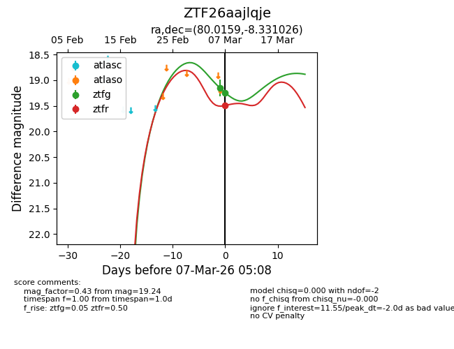
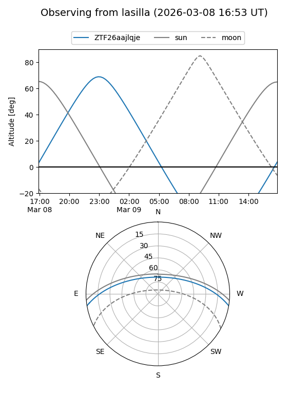
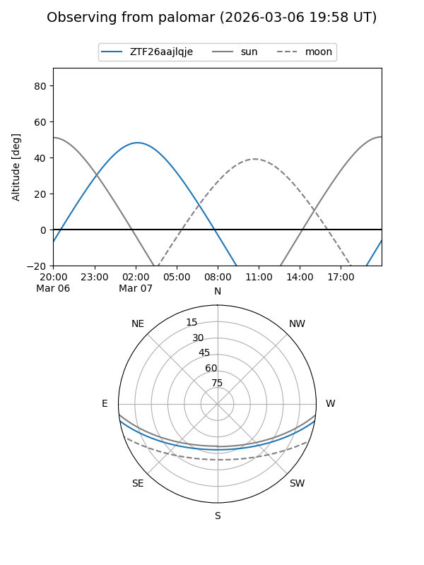
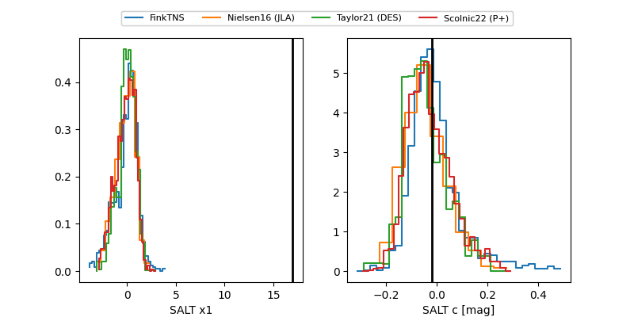

ZTF26aajlqje
Target ZTF26aajlqje at 2026-03-07 05:10
Aliases and brokers:
FINK: link
Lasair: link
ALeRCE: link
alt names
ZTF26aajlqje (ztf,fink_ztf)
Coordinates:
equatorial (ra, dec) = 80.0159,-8.33103
equatorial (HMS+DMS) = 05:20:03.83,-08:19:51.69
galactic (l, b) = (210.0314,-24.07486)
Flags:
Photometry:
last ztfg=19.24, ztfr=19.50
2 ztfg, 1 ztfr detections
Lightcurve

Visibility


Additional plots
